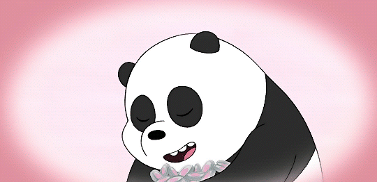

Espero que te haya gustado este pequeño detalle, color rosa porque te gusta el color rosa y Panda porque te gusta y te identificas con Panda. (Ahora si no me equivoqué).
Quise tener este pequeño detalle contigo, que espero que te guste. Esto es una demostración para que sepas que eres una persona maravillosa y te mereces todo lo lindo de este mundo.
Bajo el cielo que abraza con su luz dorada, Rosas y tulipanes, una muestra de mi mirada. Pequeños obsequios, como notas en el viento, En cada pétalo, un pensamiento contento.
Rosas rosadas, suaves como la aurora, Tulipanes danzantes, un regalo que atesora. No son solo flores, son palabras mudas, En su fragancia, encuentran las caricias.
Las rosas, testigos de días que se despliegan, Los tulipanes, cómplices en la brisa que juega. Bella dama, estas flores son para ti, Un gesto simple, en su elegancia sutil.
Algo sencillo, tal vez, pero creeme Gloria, todo lo hice de buena manera y en serio, espero que te haya gustado.😊❤️